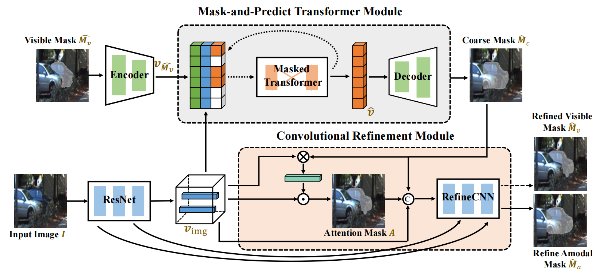

Xuelin QianPostdoctoral Research Fellowthe School of Data Science Fudan University Office: Zibin Yard, No.220, Handan Road, Shanghai Email: xlqian at fudan dot edu dot cn or xuelinq92 at gmail dot com |
Biography
News
[07/2023] Three papers are accepted by ICCV 2023 on Amodal Object Segmentation (C2F-Seg), 3D Shape Generation (ImAM), and Video Amodal Segmentation (EoRaS).
[02/2023] One paper is accepted by CVPR 2023 on Overall Survival Time Prediction (CAWIM).
[12/2022] We have released the code for an ACCV Oral 2022 paper about cloth-changing person re-id CAMC
[Code].
[10/2022] One paper is accepted by WACV 2023 on 3D object detection (ImpDet).
[09/2022] Two papers to apper in ACCV 2022 (1 Poster and 1 Oral) on human motion animation (QS-Craft)
and person re-id (CAMC).
[03/2022] One paper is accepted by CVPR 2022 on adversarial examples (DST).
[08/2021] We have released the LTCC ReID dataset of our work "Long-term Cloth-changing Person Re-identification". LTCC
[Dataset].
[10/2020] One paper is accepted by JBHI 2020 on medical image analysis (M3Lung-Sys). [Project Page]
[05/2020] One paper is accepted in ACCV 2020 as Oral Presentation on person re-identification (LTCC).
[Dataset]
[06/2020] We have released a new cloth-changed ReID dataset. VC-Clothes Dataset.
[Dataset]
[03/2020] One paper is accepted by CVPR 2020 on face recognition (FM2u-Net).
[02/2020] One paper is accepted by CVPR Workshop 2020 on person re-identification (Cloth-changed ReID).
[07/2019] One paper is accepted by TPAMI 2019 on person re-identification (MuDeep_V2).
[07/2017] One paper is accepted by ICCV 2017 on person re-identification (MuDeep_V1). [Code]
Publications

Coarse-to-Fine Amodal Segmentation with Shape Prior
IEEE International Conference on Computer Vision (ICCV), 2023
[Project Page]
[Paper]
[Code]
Learning Versatile 3D Shape Generation with Improved Auto-regressive Models
IEEE International Conference on Computer Vision (ICCV), 2023
[Paper]
![[CAWIM]](images/cvpr23_CAWIM.png)
Causally-Aware Intraoperative Imputation for Overall Survival Time Prediction
IEEE/CVF Conference on Computer Vision and Pattern Recognition (CVPR), 2023
[Paper]
ImpDet: Exploring Implicit Fields for 3D Object Detection
Winter Conference on Applications of Computer Vision (WACV), 2023
[Paper]
QS-Craft: Learning to Quantize, Scrabble and Craft for Conditional Human Motion Animation
Asian Conference on Computer Vision (ACCV), 2022
[Paper]
DST: Dynamic Substitute Training for Data-free Black-box Attack
IEEE/CVF Conference on Computer Vision and Pattern Recognition (CVPR), 2022
[Paper]
![[M3Lung-Sys]](images/JBHI2020_M3Lung-Sys.png)
M3Lung-Sys: A Deep Learning System for Multi-Class Lung Pneumonia Screening from CT Imaging
IEEE Journal of Biomedical and Health Informatics (JBHI), 2020
[Paper]
[Project Page]
![[LTCC]](images/arxiv2020_LTCC_intro.png)
Long-Term Cloth-Changing Person Re-identification
Asian Conference on Computer Vision (ACCV), 2020 (Oral)
[Paper]
[Project Page]
[Dataset]
FM2u-Net: Face Morphological Multi-branch Network for Makeup-invariant Face Verification
IEEE/CVF Conference on Computer Vision and Pattern Recognition (CVPR), 2020
[Paper]
[Project Page]
[Dataset Google Drive]
When Person Re-identification Meets Changing Clothes
15th IEEE Computer Society Workshop on Biometrics 2020, In conjunction with the IEEE Conference on Computer Vision and Pattern Recognition (CVPRW), 2020
[Paper]
[Project Page]
[Dataset Google Drive]
![[MuDeep_V2]](images/PAMI19_Framework.png)
Leader-based Multi-Scale Attention Deep Architecture for Person Re-identification
IEEE transactions on pattern analysis and machine intelligence (TPAMI), 2019
[Paper]
[Project Page]
[Code]
Scsp: Spectral clustering filter pruning with soft self-adaption manners
arXiv preprint arXiv:1806.05320, 2018
[Paper]
Academic Activities
Conference reviewer: CVPR, ECCV, ICCV, NeurIPS, AAAI, ACM MM, IJCAI, WACV, ACCV.
Journal reviewer: TPAMI, TMM, TIP, JBHI.
© Xuelin Qian | Last updated: 07/2023